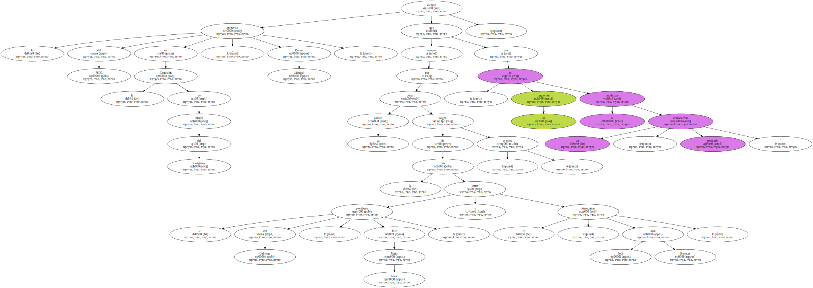
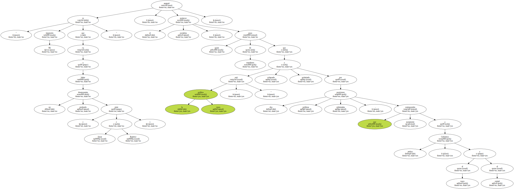
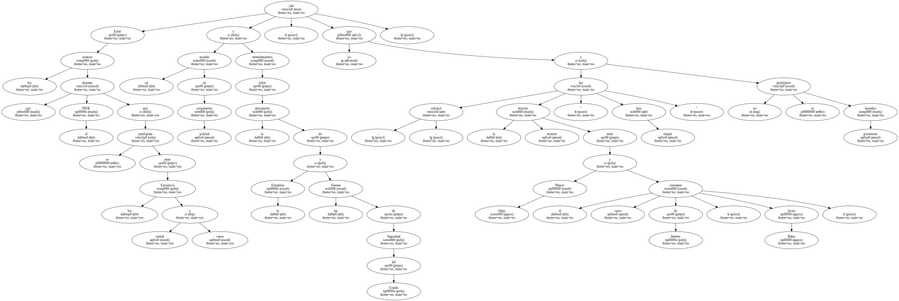
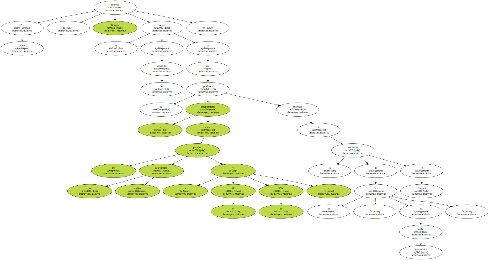

El portavoz del PSOE en la Comisión de Interior del Congreso , Ramón Jáuregui , aseguró que aunque su partido desea que de la cita entre el presidente del Gobierno , José María Aznar , y el lehendakari , Juan José Ibarretxe , salgan " avances " , su impresión es que se producirá un " desencuentro profundo ".
Jáuregui , en declaraciones a los periodistas en los pasillos del Congreso de los Diputados , indicó que los socialistas desearían que del encuentro de esta tarde saliesen algunos acuerdos en distintas materias , pero puntualizó que " esos son nuestros deseos , pero esperanzas de verdad yo no tengo ningunas ".

" Mi impresión es que va a haber un desencuentro profundo ( entre Aznar e Ibarretxe ) " , aseguró el portavoz socialista , quien puso de manifiesto que la política vasca " está colapsada y polarizada por dos posiciones políticas enfrentadas , que justamente corresponden a ambos Gobiernos , al vasco y al central ".
Entre los avances que el PSOE desearía que se produjeran entre los Ejecutivos central y vasco citó un acuerdo en cooperación policial y entendimientos sobre la articulación de la Ertzaintza y las Fuerzas de Seguridad del Estado , ya que - subrayó - la reciente reunión entre Mayor Oreja y el consejero vasco de Interior , Javier Balza , " fue simple foto " y no se produjeron acuerdos posteriores.
Por último , Jáuregui expresó el deseo de los socialistas de que se produzca un entendimiento entre los partidos que ambos representan - el PP y el PNV - respecto a la existencia de un " foro de unidad democrática " en Euskadi.
